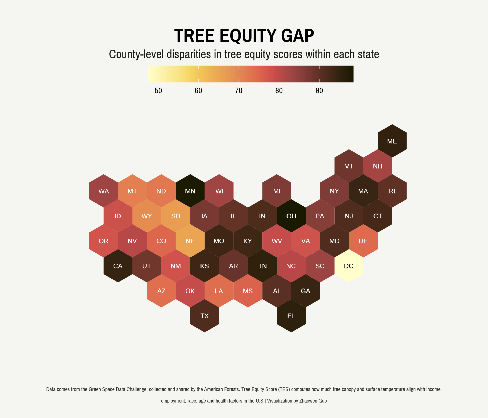

Urban green spaces, such as parks, gardens, and forests, provide numerous benefits in creating livable cities. They help improve air and water quality, reduce heat islands, and increase physical activity and mental health. However, not all communities have equal access to these benefits, leading to the concept of “tree equity.”
Tree equity refers to the fair distribution of urban green spaces and trees, regardless of a community’s socio-economic status, race, or ethnicity. American Forests, a non-profit organization dedicated to protecting and restoring forests, has been working to measure and improve tree equity across the United States.
In this blog post, I will show you how to visualize tree equity score data to tell a compelling story. All code can be found here.
1 Data Collection
Tree equity score data are currently hosted on this webpage, where users are required to manually download zip files containing geospatial data for each state. Furthermore, each shapefile includes not only tree equity scores, but also several other variables. Thus, we need to find an efficient method to automate the process of downloading files with minimal manual intervention and extract the desired variable of interest - the tree equity score - from the shapefiles.
Upon checking the web addresses of several files, a pattern has become apparent: each URL shares a similar structure in its file name, while also possessing a unique postal code. This discovery suggests that it is possible to create a script that can automatically scrape the files. Fortunately, unzip() in base R and sf package offer a convenient solution for unzipping files and reading shapefiles, and we can easily write a function to automate this process.
```{r}
library(sf)
library(tidyverse)
read_shape_URL <- function(URL){
cur_tempfile <- tempfile()
download.file(url = URL, destfile = cur_tempfile)
out_directory <- tempfile()
unzip(cur_tempfile, exdir = out_directory)
read_sf(dsn = out_directory)
}
```The question that I am interested in is: which state has the greatest disparity in tree equity score across counties, as measured by the difference between the maximum and minimum tree equity scores within each state. Also, it is important to note that data availability may vary as not all states have available tree equity score data. To verify the existence of a URL, we can use Rcurl package and write a for-loop to produce the key variable of interest, the tree equity gap.
```{r}
states <- read.csv("state-names.csv") # downloaded https://worldpopulationreview.com/states/state-abbreviations
state_names <- rep(NA, 51)
tes_gaps <- rep(NA, 51)
for (i in 1:nrow(states)){
state <- states$lower_code[i]
state_names[i] <- state
print(state)
URL <- paste0("https://national-tes-data-share.s3.amazonaws.com/national_tes_share/", state, ".zip.zip")
if (RCurl::url.exists(URL) == T) {
map <- read_shape_URL(paste0("https://national-tes-data-share.s3.amazonaws.com/national_tes_share/", state, ".zip.zip"))
tes_gap <- max(map$tes) - min(map$tes)
tes_gaps[i] <- tes_gap
} else {
tes_gaps[i] <- NA
}
}
data <- data.frame(lower_code = state_names,
gap = tes_gaps) %>%
cbind(states[1])
```2 Data Cleaning
Great, we now have our data! The next step is to clean and prepare it for visualization. With the consideration of working with spatial data across multiple regions and the fact that the tree equity gap is a continuous variable, hexbin maps become a desirable choice. Hexbin maps divide the map area into small hexagonal bins and consolidate the data points within them, presenting a clear and compact depiction of the vast amount of data.
```{r}
library(geojsonio)
library(rgeos)
# create a base hexbin map of US
hex_states <- geojson_read("us_states_hexgrid.geojson", what = "sp")
# extract state names
hex_states@data <- hex_states@data %>%
mutate(google_name = str_replace(google_name, " \\(United States\\)", ""))
# create a data frame for hexbin map
hex_states_fortify <- broom::tidy(hex_states, region = "google_name")
# match state names
data_map <- hex_states_fortify %>%
right_join(data, by = c("id" = "state")) %>%
mutate(id = state.abb[match(id, state.name)])
data_map$id[data_map$group == "District of Columbia.1"] <- "DC"
labels <- cbind.data.frame(data.frame(gCentroid(hex_states, byid = T),
id = hex_states@data$iso3166_2))
data_map <- data_map %>%
right_join(labels, by = "id") %>%
filter(is.na(gap) == F)
```3 Data Visualization
We now have our spatial polygon data frame ready and can visualize it! To make it visually appealing, I pick a custom Google font “Pragati Narrow” for the graph and a stunning color palette from the scico package. One trick is to adjust text colors that contrast with the background color. For instance, in the case of Washington D.C., which has the narrowest gap in tree equity scores, the bin’s background can be made lighter. However, if white text is still used as in other areas, the label may not be easily visible. To mitigate this, we can establish a threshold for switching the text color as necessary.
```{r}
library(scico)
library(showtext)
theme_set(theme_minimal(base_family = "Pragati Narrow"))
theme_update(
# legend
legend.title = element_blank(),
legend.position = 'top',
legend.direction = 'horizontal',
legend.key.width = unit(1.5, "cm"),
legend.text = element_text(color = "black", size=30),
# axis
axis.text.x = element_blank(),
axis.text.y = element_blank(),
# titles
panel.grid = element_blank(),
plot.margin = margin(15, 30, 15, 30),
plot.background = element_rect(fill = "#f5f5f2", color = NA),
panel.background = element_rect(fill = "#f5f5f2", color = NA),
legend.title.align=1,
plot.title = element_text(
color = "black",
size = 70,
face = "bold",
margin = margin(t = 15),
hjust = 0.5
),
plot.subtitle = element_text(
color = "grey10",
size = 45,
lineheight = 3,
margin = margin(t = 5),
hjust = 0.5
),
plot.title.position = "plot",
plot.caption.position = "plot",
plot.caption = element_text(
color = "grey20",
size = 20,
lineheight = 0.5,
hjust = 0.5,
margin = margin(t = 40))
)
data_map %>%
ggplot () +
geom_polygon(aes(x = long, y = lat, group = group, fill = gap), linewidth = 0.5) +
scale_fill_scico(palette = "lajolla", direction = 1) +
geom_text(aes(x=x, y=y, label=id, color = gap < 60), size = 8, alpha = 0.5,
show.legend = F) +
scale_color_manual(values = c("white", "black")) +
coord_map(clip = "off") +
labs(title = "TREE EQUITY GAP",
subtitle = "County-level disparities in tree equity scores within each state",
x = "", y = "",
caption=
str_wrap(
"Data comes from the Green Space Data Challenge,
collected and shared by the American Forests.
Tree Equity Score (TES) computes how much tree canopy and surface temperature align with income,
employment, race, age and health factors in the U.S | Visualization by Zhaowen Guo", width=150))
```
4 Implications
What do we learn from this visualization? The graph clearly illustrates the unequal distribution of green spaces, particularly in states like Ohio and Minnesota, where the gap is much more pronounced. This calls for prompt and effective action to rectify this imbalance.